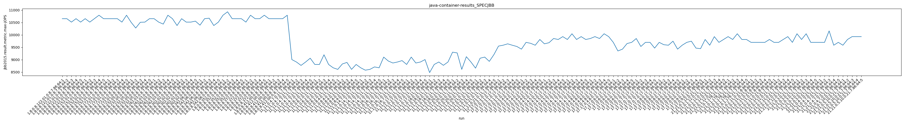
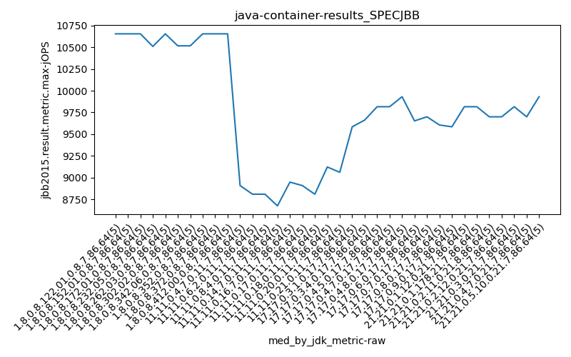
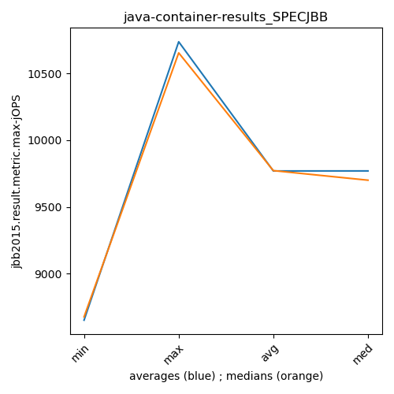
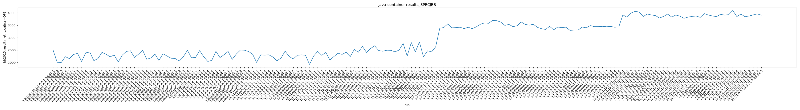
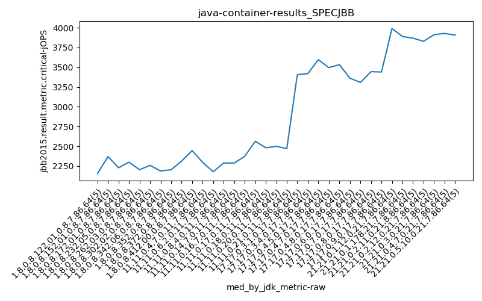
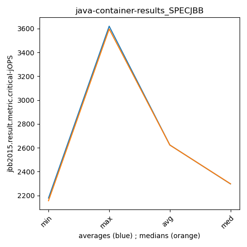

java- SPECJBB
Context at bottom
/home/jvanek/git/benchmarks-in-nested-virtualisation-toolchain/final_results/container_results/container-results_JMH
java-
SPECJBB
/home/jvanek/git/benchmarks-in-nested-virtualisation-toolchain/final_results/container_results/container-results_RADARGUNs1
java-
SPECJBB
/home/jvanek/git/benchmarks-in-nested-virtualisation-toolchain/final_results/container_results/container-results_DACAPO
java-
SPECJBB
/home/jvanek/git/benchmarks-in-nested-virtualisation-toolchain/final_results/container_results/container-results_SPECJBB
java-
SPECJBB
container-results_SPECJBB
- container-results_SPECJBB - max-jops
- container-results_SPECJBB - critical jops
container-results_SPECJBB - max-jops
Expected number of java- JDKs: 19
1st avgmed_alljdks_metric:
/home/jvanek/git/benchmarks-in-nested-virtualisation-toolchain/final_results/result_processing.py /home/jvanek/git/benchmarks-in-nested-virtualisation-toolchain/final_results/container_results/container-results_SPECJBB jbb2015.result.metric.max-jOPS False
values: [10654, 10654, 10516, 10654, 10516, 10654, 10516, 10654, 10793, 10654, 10654, 10654, 10654, 10516, 10793, 10509, 10278, 10509, 10516, 10654, 10654, 10516, 10436, 10793, 10654, 10378, 10654, 10516, 10516, 10555, 10393, 10654, 10673, 10378, 10516, 9007, 8909, 8772, 8909, 9062, 8810, 8810, 9201, 8810, 8676, 8612, 8831, 8892, 8612, 8810, 8676, 8580, 8612, 8711, 8676, 9107, 8949, 8869, 8909, 8965, 9550, 9585, 9641, 9585, 9534, 9427, 9700, 9662, 9585, 9816, 9641, 9686, 9855, 9816, 9931, 9816, 10047, 9816, 9931, 9816, 9855, 9931, 9855, 10047, 9931]

Expected number of iterations: 5
final number of values: 85 out of 95
Pass rate: 89.5%
values: (8580, 10793, 9824.988235294117, 9855)

** accuracy from all jdks and runs
more is better
MIN: 8580
MAX: 10793
AVG: 9824.988235294117
MED: 9855
Relative differences 1:
MIN-MAX: 21.0 %
MIN-AVG: 13.0 %
MIN-MED: 13.0 %
MAX-MIN: -26.0 %
MAX-AVG: -10.0 %
MAX-MED: -10.0 %
AVG-MED: 0.0 %
stored to java-.properties. sort | uniq that!
2nd avgmed_by_jdk_metric:
values: [10598.8, 10654.2, 10654.2, 10493.2, 10610.6, 10523.8, 10522.8, 8931.8, 8861.4, 8751.4, 8651.0, 8959.8, 9579.0, 9638.0, 9785.8, 9885.2, 9923.8]

values: [10654, 10654, 10654, 10509, 10654, 10516, 10516, 8909, 8810, 8810, 8676, 8949, 9585, 9662, 9816, 9816, 9931]

values: (8651.0, 10654.2, 9824.988235294117, 9885.2)
values: (8676, 10654, 9830.64705882353, 9816)

** accuracy from all jdks where runs were avged
more is better
MIN: 8651.0
MAX: 10654.2
AVG: 9824.988235294117
MED: 9885.2
Relative differences 1:
MIN-MAX: 19.0 %
MIN-AVG: 12.0 %
MIN-MED: 12.0 %
MAX-MIN: -23.0 %
MAX-AVG: -8.0 %
MAX-MED: -8.0 %
AVG-MED: 1.0 %
stored to java-.properties. sort | uniq that!
** accuracy from all jdks where runs were medianed
more is better
MIN: 8676
MAX: 10654
AVG: 9830.64705882353
MED: 9816
Relative differences 1:
MIN-MAX: 19.0 %
MIN-AVG: 12.0 %
MIN-MED: 12.0 %
MAX-MIN: -23.0 %
MAX-AVG: -8.0 %
MAX-MED: -9.0 %
AVG-MED: -0.0 %
stored to java-.properties. sort | uniq that!
container-results_SPECJBB - critical jops
Expected number of java- JDKs: 19
1st avgmed_alljdks_metric:
/home/jvanek/git/benchmarks-in-nested-virtualisation-toolchain/final_results/result_processing.py /home/jvanek/git/benchmarks-in-nested-virtualisation-toolchain/final_results/container_results/container-results_SPECJBB jbb2015.result.metric.critical-jOPS False
values: [2494, 2007, 2001, 2234, 2156, 2322, 2371, 2041, 2389, 2422, 2075, 2155, 2408, 2334, 2229, 2300, 2020, 2299, 2446, 2473, 2205, 2338, 2494, 2130, 2182, 2342, 2082, 2352, 2260, 2171, 2161, 2058, 2231, 2493, 2188, 2003, 2306, 2298, 2309, 2222, 2069, 2179, 2458, 2244, 2141, 2290, 2306, 2293, 1924, 2258, 2447, 2289, 2405, 2103, 2241, 2374, 2327, 2412, 2237, 2526, 3378, 3410, 3561, 3396, 3407, 3420, 3365, 3420, 3363, 3438, 3540, 3596, 3579, 3696, 3687, 3627, 3495, 3534, 3445, 3478, 3634, 3534, 3505, 3541, 3415]

Expected number of iterations: 5
final number of values: 85 out of 95
Pass rate: 89.5%
values: (1924, 3696, 2623.3882352941177, 2338)

** accuracy from all jdks and runs
more is better
MIN: 1924
MAX: 3696
AVG: 2623.3882352941177
MED: 2338
Relative differences 1:
MIN-MAX: 48.0 %
MIN-AVG: 27.0 %
MIN-MED: 18.0 %
MAX-MIN: -92.0 %
MAX-AVG: -41.0 %
MAX-MED: -58.0 %
AVG-MED: -12.0 %
stored to java-.properties. sort | uniq that!
2nd avgmed_by_jdk_metric:
values: [2178.4, 2309.0, 2240.2, 2307.6, 2269.8, 2241.4, 2226.2, 2227.6, 2218.2, 2214.2, 2297.0, 2375.2, 3430.4, 3401.2, 3619.6, 3515.8, 3525.8]

values: [2156, 2371, 2229, 2300, 2205, 2260, 2188, 2298, 2179, 2290, 2289, 2374, 3407, 3420, 3596, 3495, 3534]

values: (2178.4, 3619.6, 2623.3882352941177, 2297.0)
values: (2156, 3596, 2623.0, 2298)

** accuracy from all jdks where runs were avged
more is better
MIN: 2178.4
MAX: 3619.6
AVG: 2623.3882352941177
MED: 2297.0
Relative differences 1:
MIN-MAX: 40.0 %
MIN-AVG: 17.0 %
MIN-MED: 5.0 %
MAX-MIN: -66.0 %
MAX-AVG: -38.0 %
MAX-MED: -58.0 %
AVG-MED: -14.0 %
stored to java-.properties. sort | uniq that!
** accuracy from all jdks where runs were medianed
more is better
MIN: 2156
MAX: 3596
AVG: 2623.0
MED: 2298
Relative differences 1:
MIN-MAX: 40.0 %
MIN-AVG: 18.0 %
MIN-MED: 6.0 %
MAX-MIN: -67.0 %
MAX-AVG: -37.0 %
MAX-MED: -56.0 %
AVG-MED: -14.0 %
stored to java-.properties. sort | uniq that!
/home/jvanek/git/benchmarks-in-nested-virtualisation-toolchain/final_results/container_results/container-results_RADARGUNs3
java-
SPECJBB
/home/jvanek/git/benchmarks-in-nested-virtualisation-toolchain/final_results/container_results/container-results_J2DBENCH
java-
SPECJBB
pass rates:
container-results_SPECJBB=89.5%
Context:
- container_results
- SPECJBB